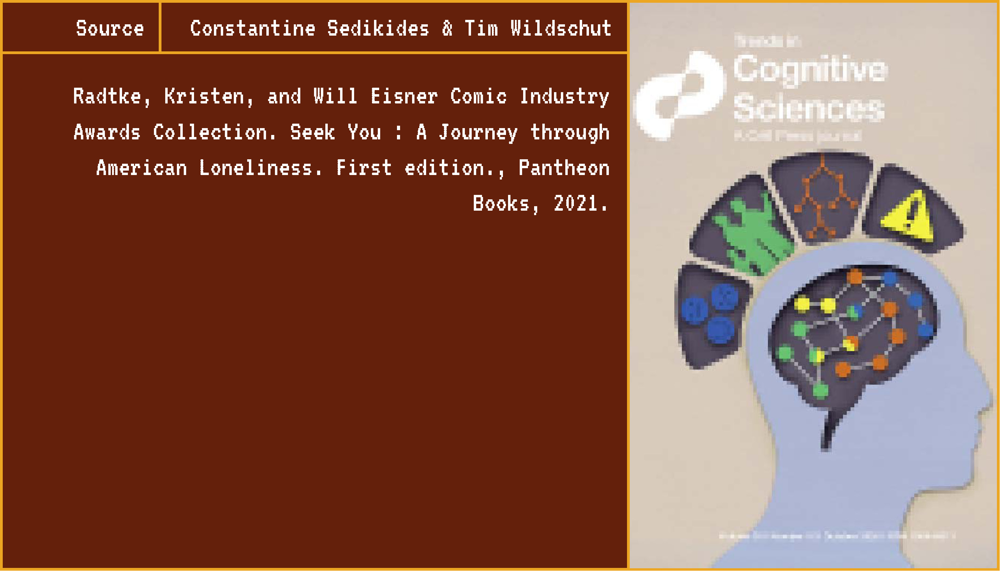

So how's this whole thing gonna work?

Well, all of you are going to be a part of my D&D campaign, where I'll interview you throughout y'all's progression, and I'll see how close ya'll get through your characters?

What's it gonna be about?


It's going to take place on a train, and all of you are going to explore many different places and solve mysteries, and all of the places take inspiration from many different pieces of media I interact with like-
Honkai Star Rail?
Hades and Hades 2?

Minecraft?

ok so yes, but wow this is really just showing that I like a lot of stuff...

it do be like that sometimes
it really do
the primal urge to interact with anything and everything

This doesn't really sound like we're going to have fights...
It won't be super battle heavy, obviously you'll still have fights since that's sometimes the best way to demonstrate conflict and stuff, but I like roleplay heavy things, so I think it'd be pretty great to see how.. how.. ummmm, oh gosh I lost my train of thought, it's so totally gone...

How close we can get with mostly acting?
I guess. You'll be doing more investigative stuff that'll sort of replace what would typically be fights, dungeons, temples, that whole- sorta- area of stuff
How will this be shown?
yeah that is sort of very important for our research
That is indeed very true and I have some ideas, big thinker over here thinking quite a lot
Care to share?
One thing I'd like to do is let the viewer participate in the story either through letting them create their own character based off of the info I give them (how I plan to do that yet I don't know), or make little pamphlets that have general description of each of the places, the world, that whole thing that people can take and create their own campaign based off of the world I've created!
So... the D&D books?
Well yes, but small, pocket sized if you will, mostly so people can make their own uhhh hmmm.......... mini worlds! Also giving them only basic info means that they get to use their own imagination, as well as create stuff based off of their own inspirations!
Where does analysing us play into this?
And that is the question isn't it?
the biggest one
the very important one!
the most important one
In the bigger medium that goes more in depth about the journey and everything, it'll probably start with basic intros to all of you, relationship chart maybe, and then as it progresses more detail gets added, and then people will get to see how all of you change throughout it!
Also since ya'll will be interviewed multiple times, your answers will be shown somehow, and those answers will change as the story progresses!
... I'm getting suspicious
Sus?
About what?
the people haven't shown up during this entire convo
Huh, that's true, I haven't heard from any of them in a hot minute, I wonder why that i-
“Far from reflecting escapism from the present, nostalgia potentiates an attainable future.”

There they are
How does that relate though?
Well, D&D can potentially be seen as a way to escape from present world struggles, which is what escapism is, but us- bleh- using nostalgia as a sort of- motivation for your actions, creativity, all that jazz in it can change your character mindset, as well as your actual mindset for a better future
I think, I don't actually know, I'm just speaking from the brain, really just spouting whatever
That makes sense
Does it?
Makes sense to me
Same
Also same
Perrf to me!
Epic, so cool... freaking nailed it.